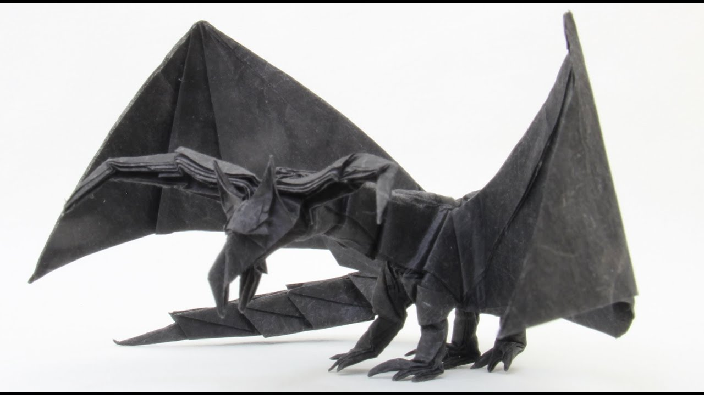
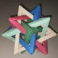

Origami
I love to play with origami papers and make complex Origamis
But the best of them are listed here.
1. Tadoshi Mori's Darkness dragon

This dragon origami took me a 4 days to complete and was only able to make it with a chart paper. The detailing was a lot.
5 Intersecting tedrahedron

This is a modular origami. It took me 2 days to complete and the end result was very nice.
About Me